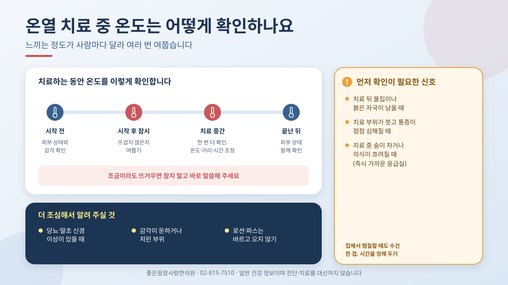

온열 치료는 따뜻한 열을 치료 부위에 전달하는 방법으로, 피부 감각과 몸 상태가 사람마다 달라 시작 전과 중간에 뜨겁지 않은지 확인하고 온도와 시간을 조정하며 진행합니다.
여쭙는 것
- 치료 부위에 상처, 붓기, 열감이 있나요?
- 감각이 둔하거나 저린 부위가 있나요?
- 당뇨나 혈액 순환 문제, 신경 질환이 있나요?
생활에서 해 볼 것
- 치료 중 "조금 뜨거워요", "괜찮아요"를 바로 말하기로 미리 마음먹기
- 졸음이 와도 불편하면 호출할 수 있게 위치 확인해 두기
- 치료 부위에 로션이나 파스를 바르고 오지 않기
한의원에서 함께 살필 것
- 피부가 민감하거나 얇다고 느끼는 분은 온도를 낮추거나 시간을 줄여 함께 조정합니다.
- 치료 부위가 차갑게 느껴지고 뻐근한 분은 온열 뒤 상태를 함께 확인합니다.
- 치료 중 땀이 나거나 어지러움이 오는 분은 중단하고 쉬는 방법을 함께 정합니다.
먼저 확인이 필요한 신호
- 치료 뒤 피부에 물집이나 붉은 자국이 남는 경우
- 치료 부위가 붓고 통증이 점점 심해지는 경우
- 치료 중 숨이 차거나 의식이 흐려지는 경우(즉시 응급실)

온열 치료 중에는 시작할 때 피부 상태와 감각을 먼저 확인하고, 시작 후 잠시 뒤와 중간에 한 번 더 "뜨겁지 않은지" 여쭤 온도와 거리, 시간을 조정합니다. 같은 온도라도 어떤 분에게는 적당하고 어떤 분에게는 뜨거울 수 있기 때문입니다. 조금이라도 뜨겁다면 참지 말고 바로 말씀해 주시는 것이 가장 중요합니다.
왜 온도를 여러 번 확인하나요
- 피부 두께와 감각, 그날의 컨디션에 따라 열을 느끼는 정도가 크게 다릅니다.
- 치료 중 잠이 들면 뜨거움을 늦게 알아차릴 수 있습니다.
- 당뇨나 말초 신경 이상이 있으면 감각이 둔해 화상 위험이 커질 수 있습니다.
- 처음에는 적당하던 온도도 시간이 지나며 뜨겁게 느껴지기도 합니다.

치료 중에는 이렇게 확인합니다
- 시작 전: 치료 부위 피부에 상처, 붓기, 붉은 기운이 없는지 보고, 감각이 둔한 곳이 있는지 여쭙습니다.
- 시작 직후: 따뜻함이 느껴지는지, 한쪽만 뜨겁지 않은지 여쭙습니다.
- 치료 중간: 처음보다 뜨거워지지 않았는지 한 번 더 여쭙고, 필요하면 거리나 시간을 조정합니다.
- 끝난 뒤: 피부가 붉게 남지 않았는지 함께 보고, 그날 지켜볼 점을 알려 드립니다.
자주 하는 오해
- 뜨거울수록 더 잘 풀린다고 여기기 쉽지만, 견디기 힘든 열은 피부에 부담만 주므로 편안하게 따뜻한 정도면 충분합니다.
- 조금 뜨거워도 참는 것이 예의라고 생각하기 쉽지만, 뜨겁다고 바로 말씀해 주셔야 온도와 거리를 맞출 수 있습니다.
- 지난번에 괜찮았으니 이번에도 같을 것이라고 여기기 쉽지만, 그날의 피로와 피부 상태, 복용 약에 따라 열을 느끼는 정도가 달라집니다.
- 저온에서는 화상이 생기지 않는다고 생각하기 쉽지만, 낮은 온도라도 오래 한 자리에 닿으면 저온 화상이 생길 수 있습니다.

예를 들면 이런 경우입니다
- 예를 들어 당뇨로 발끝 감각이 둔한 어르신이라면, 감각이 둔한 부위는 피하거나 온도를 낮추고 확인 간격을 더 짧게 잡습니다.
- 예를 들어 퇴근 뒤 피곤해서 치료 중 잠들기 쉬운 직장인이라면, 호출 방법을 미리 알려 드리고 중간 확인을 놓치지 않도록 합니다.
- 예를 들어 피부가 얇고 열에 쉽게 붉어지는 분이라면, 낮은 온도에서 시작해 반응을 보며 조금씩 맞춥니다.
- 예를 들어 추운 날 밖에서 오래 있다 들어와 손발이 꽁꽁 언 상태라면, 차가운 피부는 열을 늦게 느낄 수 있어 몸이 조금 녹은 뒤 낮은 온도부터 시작합니다.
- 예를 들어 처음 온열 치료를 받아 긴장되는 분이라면, 장비가 어느 부위에 어떻게 닿는지와 따뜻함이 어느 정도인지 먼저 설명드리고, 짧은 시간부터 시작합니다.
먼저 이렇게 여쭙니다
- 치료 부위에 상처, 붓기, 열감이 있나요?
- 감각이 둔하거나 저린 부위가 있나요?
- 당뇨나 혈액 순환 문제, 신경 질환이 있나요?
- 열에 쉽게 피부가 붉어지는 편인가요?
- 치료 부위에 파스나 연고를 바르셨나요?
- 최근 피부가 예민해지거나 가려운 곳이 있나요?

일상에서 먼저 해 볼 수 있는 것
- 치료 중 "조금 뜨거워요", "괜찮아요"를 바로 말하기로 미리 마음먹기
- 졸음이 와도 불편하면 호출할 수 있게 위치 확인해 두기
- 치료 부위에 로션이나 파스를 바르고 오지 않기
- 집에서 찜질할 때도 수건을 한 겹 대고 시간을 정해 두기
- 치료 부위에 금속 장신구나 시계를 하고 있다면 미리 빼 두기
- 땀이 많이 난 상태라면 잠시 땀을 식힌 뒤 치료받기
스스로 점검해 보세요
- 찜질팩이나 전기장판을 쓴 뒤 피부가 붉게 남은 적이 있다
- 손발 끝이나 치료 부위 감각이 둔하거나 저리다
- 당뇨나 혈액 순환 문제로 치료받고 있다
- 치료 부위에 최근 다친 곳, 붓기, 열감이 있다
- 치료 부위에 파스나 로션을 바른 상태다
- 치료 중 쉽게 잠드는 편이다
- 오늘 몸에 열이 나거나 감기 기운이 있다
하나라도 해당한다면 온열 치료를 시작하기 전에 먼저 말씀해 주세요.

한의원에서 함께 살필 수 있는 경우
- 피부가 민감하거나 얇다고 느끼는 분은 온도를 낮추거나 시간을 줄여 함께 조정합니다.
- 치료 부위가 차갑게 느껴지고 뻐근한 분은 온열 뒤 상태를 함께 확인합니다.
- 치료 중 땀이 나거나 어지러움이 오는 분은 중단하고 쉬는 방법을 함께 정합니다.
좋은꿈참사랑한의원에서는 IS400 극초단파 치료기 같은 온열 장비를 쓸 때 피부 감각과 건강 상태를 먼저 여쭙고, 온도와 시간을 환자분마다 맞춰 정합니다. 치료가 끝나면 피부 상태를 함께 확인하고, 다음 진료에서 온열 뒤 느낌을 이어서 여쭙니다.
첫 방문에는 문진표를 쓴 뒤 원장이 불편한 부위와 경위, 당뇨나 순환 문제 같은 병력과 복용 약을 여쭙고, 모든 분께 진맥을 짚습니다. 움직임과 누르면 아픈 곳을 확인한 뒤 온열 치료가 필요하다고 판단되면 부위와 시간을 정하고 피부 감각을 먼저 확인합니다. 치료 중에는 앞에서 말씀드린 순서대로 온도를 여쭙고, 침이나 다른 치료와 함께 받는 경우에는 순서와 이유를 먼저 설명드립니다.
이렇게 기록해 오시면 상담이 쉬워집니다
- 이전 온열 치료나 찜질 뒤 피부가 붉어졌던 경험
- 감각이 둔하거나 저린 부위
- 당뇨, 순환 문제 등 진단받은 질환
- 복용 중인 약
- 치료 부위에 평소 바르는 연고나 파스의 이름
- 집에서 찜질팩이나 전기장판을 쓰는 시간과 온도 설정
- 예전에 온열 치료를 받은 적이 있다면 그때 편했던 온도와 시간
- 평소 손발이 찬 편인지, 땀이 많은 편인지

며칠 지켜보고, 언제 바로 확인하나요
- 치료 뒤 피부가 살짝 붉은 정도는 몇 시간 안에 가라앉는 경우가 많아, 그날 저녁까지 지켜보셔도 됩니다.
- 다음 날에도 붉은 자국이 남아 있거나 따끔거림이 이어지면 다음 진료 전에 전화(02-815-7510)로 먼저 알려 주세요.
- 물집이 생기거나 피부가 벗겨졌다면 터뜨리지 말고 바로 연락하시고, 범위가 넓거나 통증이 심하면 피부과나 병원에서 확인받으세요.
이런 증상은 먼저 확인이 필요합니다
- 치료 뒤 피부에 물집이나 붉은 자국이 남는 경우
- 치료 부위가 붓고 통증이 점점 심해지는 경우
- 치료 중 숨이 차거나 의식이 흐려지는 경우(즉시 응급실)
감각이 둔한 부위가 있거나 당뇨, 말초 신경 이상이 있으면 뜨거움을 늦게 느낄 수 있어 미리 알려 주세요. 피부에 물집이나 붉은 자국이 생기면 즉시 알리시고, 복용 중인 약은 처방한 의사와 상의 없이 줄이거나 끊지 않습니다.

함께 읽으면 좋은 글
- IS400 극초단파 치료기로 온열 치료를 받을 때 무엇을 알아 두면 좋나요?
- 온열 치료를 받기 전에 먼저 알려야 하는 분은 어떤 경우인가요?
- 찜질팩을 오래 대고 있으면 왜 화상이 생기나요?
한눈에 보는 표
| 구분 | 핵심 |
|---|---|
| 여쭙는 것 | 치료 부위에 상처, 붓기, 열감이 있나요? 감각이 둔하거나 저린 부위가 있나요? |
| 생활에서 해 볼 것 | 치료 중 "조금 뜨거워요", "괜찮아요"를 바로 말하기로 미리 마음먹기 졸음이 와도 불편하면 호출할 수 있게 위치 확인해 두기 |
| 한의원에서 함께 살필 것 | 피부가 민감하거나 얇다고 느끼는 분은 온도를 낮추거나 시간을 줄여 함께 조정합니다. 치료 부위가 차갑게 느껴지고 뻐근한 분은 온열 뒤 상태를 함께 확인합니다. |
| 먼저 확인이 필요한 신호 | 치료 뒤 피부에 물집이나 붉은 자국이 남는 경우 치료 부위가 붓고 통증이 점점 심해지는 경우 |
자주 묻는 질문
따뜻함이 약해도 괜찮은가요?
약하게 느껴지면 말씀해 주세요. 상태를 보고 조정할 수 있습니다.
치료 중에 잠들어도 되나요?
편안히 쉬셔도 되지만 불편함이 있으면 바로 호출해 주세요.
열감이 있는 날도 받을 수 있나요?
몸에 열이 있거나 염증 증상이 있으면 미리 알려 주세요.
집에서 찜질할 때도 온도를 확인해야 하나요?
네. 수건을 한 겹 대고 시간을 정해 두며, 잠들기 전에는 끄는 것이 좋습니다. 감각이 둔한 부위는 더 조심하세요.
온열 치료 중에 자세를 바꾸고 싶으면 어떻게 하나요?
혼자 움직이면 열이 한곳에 몰릴 수 있어, 먼저 말씀해 주시면 장비 위치를 함께 다시 맞춥니다.
온열 치료는 얼마나 오래 받나요?
부위와 상태에 따라 시간을 정하며, 중간에 뜨겁거나 불편하면 언제든 멈출 수 있습니다.
이 글은 일반적인 건강 정보이며 개인의 진단이나 치료를 대신하지 않습니다. 증상이 있거나 복용 중인 약이 있다면 진료를 통해 확인하세요. 치료 효과는 개인마다 다를 수 있습니다.
작성 기준: 일반적으로 알려져 있는 건강 정보를 참고해 정리했습니다(대표원장 감수). 증상 기록은 1~2주 동안 하루 1회, 비슷한 시간에 적어 오시면 지난 상태와 비교하기 쉽습니다.
좋은꿈참사랑한의원은 재진 때 지난번 이야기부터 이어서 여쭙니다. 진료시간과 예약은 오시는 길에서 확인하세요.
어디서 상담받을 수 있나요?
좋은꿈참사랑한의원은 서울 동작구 만양로2길 2 신성빌딩 3층·5층(서울 동작구 상도동, 7호선 상도역 3번 출구 근처)에 있습니다. 한의사 3명(이종호 대표원장, 조영기 수석진료원장, 정원영 진료원장)이 진료합니다. 진료시간은 평일 09:30~20:00(점심 13:00~14:00), 토·일·공휴일 09:30~15:00이며, 방문 전 전화로 확인을 권합니다. 예약은 네이버 예약, 카카오톡 상담, 전화 02-815-7510로 받습니다.